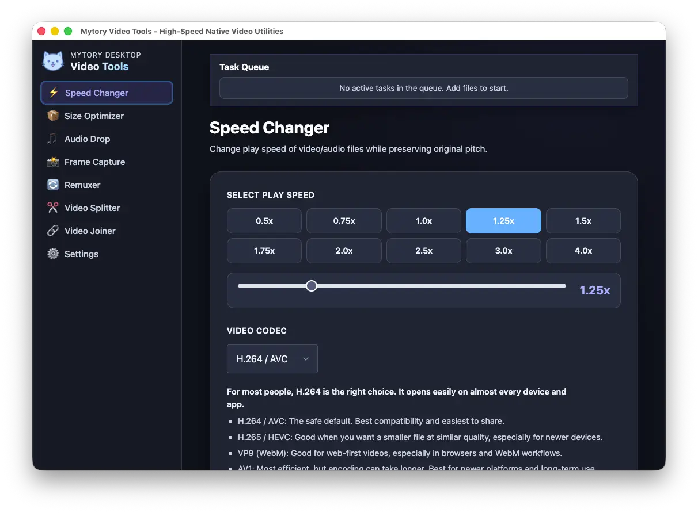

動画ガイド
再エンコードせずに動画をカットする方法
標準のカットは既存のストリームをコピーするため高速で、映像を再圧縮しません。任意で使えるSmart Cutは、対応する素材を選択したフレーム境界でカットします。

指定した時刻どおりにカットできないことがある理由
圧縮動画は複数のフレームをまとめて保存します。キーフレームは単独でデコードできますが、多くのフレームは前のフレームを参照します。FFmpegが入力前の位置からタイムスタンプを探すと、その時刻より前にある最も近いシーク位置から処理を始めます。そのためストリームコピーでは、特にキーフレームの間隔が長い場合、実際の開始位置が指定時刻と異なることがあります。
標準のストリームコピーではエンコード済みの映像は変更されませんが、指定した開始時刻に正確に合うとは限らず、前のキーフレームから始まる場合があります。任意機能のSmart Cutは選択したフレームでカットします。対応するフレーム間圧縮動画ではカット境界を再エンコードし、安全にランダムアクセスできる位置があれば中間部分をコピーします。選択した区間によっては、その区間全体を再エンコードする場合があり、安全でないGOP構成は拒否されます。対応するフレーム内圧縮動画は全区間をコピーします。音声がある場合、Smart Cutは音声を再エンコードします。
Smart Cutの対応範囲
Smart Cutは、MP4またはMOVのH.264とHEVC、MP4のAV1、MP4またはWebMのVP9、MKVまたはWebMのVP8、MP4またはMOVのMPEG-4とMPEG-2に対応しています。フレーム内圧縮コーデックとコンテナの組み合わせは次のとおりです。MJPEGとPNGはMP4、MOV、MKV、AVI、Ut VideoとHuffYUVはMOV、MKV、AVI、FFV1はMKV、AVI、MOV、rawvideoはMKV、TIFFはMOV、MKV、HAPとDNxHDはMOV、MKV、AVI、ProResはMOVに対応します。H.264とHEVC以外のコーデックでは、入力と出力のコンテナを同じにする必要があります。
H.264は8-bit 4:2:0のConstrained Baseline、Baseline、Main、High、High 10プロファイルに対応します。10-bitではHigh 10プロファイルの4:2:0、High 4:2:2プロファイルの4:2:2、またはHigh 4:4:4 Predictiveプロファイルの4:4:4に限られます。HEVCはMain 8-bit 4:2:0、Main 10 10-bit 4:2:0、またはRExt 10-bit 4:2:2/4:4:4に対応します。AV1はMain 8-bitまたは10-bit 4:2:0、VP9はProfile 0 8-bit 4:2:0、Profile 2 10-bit 4:2:0、またはProfile 3 10-bit 4:2:2/4:4:4に対応します。VP8とMPEG-4/MPEG-2は8-bit 4:2:0に限られます。フレーム内圧縮コーデックは8-bitまたは一部の10-bit 4:2:0/4:2:2形式に対応します。可変フレームレート動画は、フレームのタイムスタンプが有効で単調増加している場合に対応します。Smart Cutにはプログレッシブ方式、正方画素、開始オフセット0も必要です（WebM Opusの短いプリロールは例外）。映像ストリームは1つ、音声ストリームは最大1つまでです。対応していない組み合わせは拒否されます。
すばやくカットする
- Mytory Video Toolsを開き、「動画分割」を選びます。
- 動画を読み込み、開始時刻と終了時刻を設定します。
- 高速で劣化のないコピーにするにはSmart Cutをオフのまま書き出します。開始位置がキーフレームに移動する場合があります。対応する素材を選択したフレームでカットするにはSmart Cutをオンにし、時間を小数の秒で入力してから書き出します。
Mytory Video ToolsはFFmpegを内蔵した無料のElectronデスクトップアプリです。Windows、macOS、Linuxでローカルに動作し、コマンドラインは必要ありません。